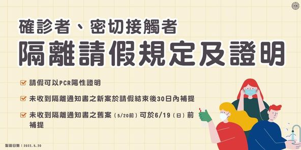
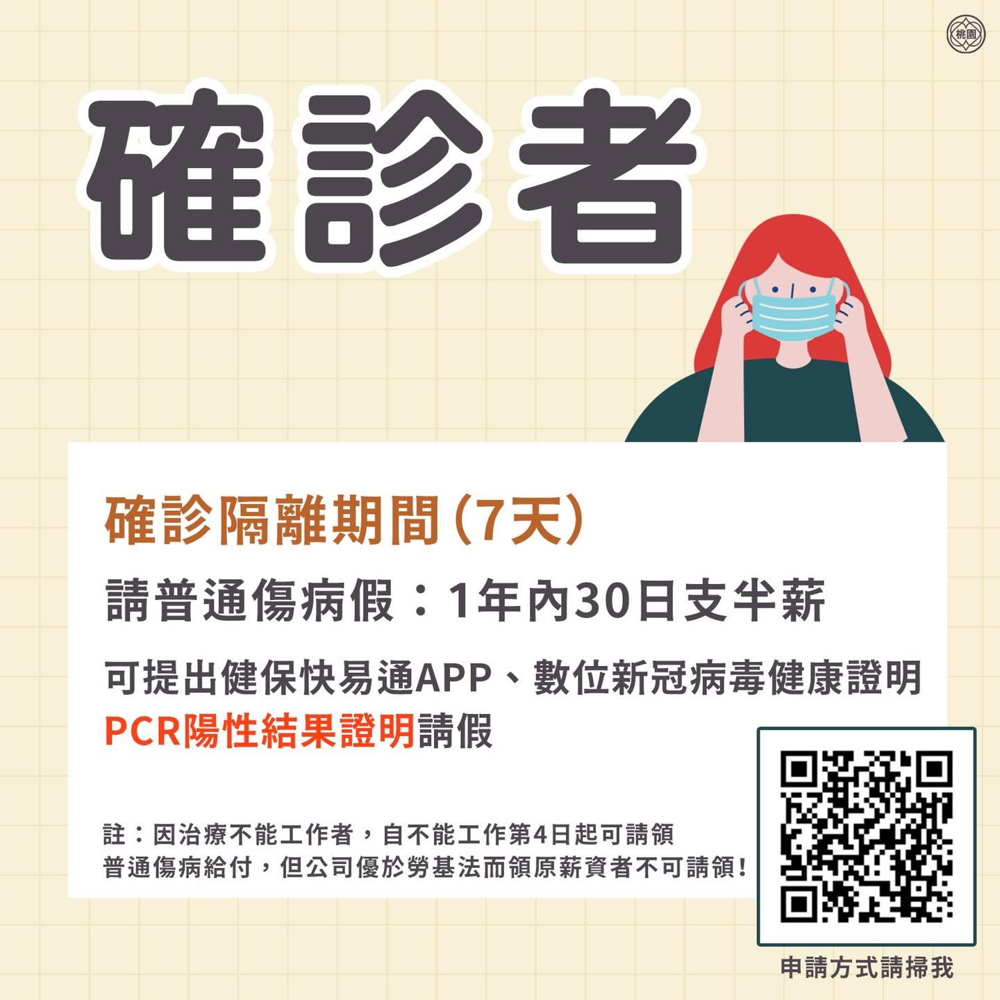
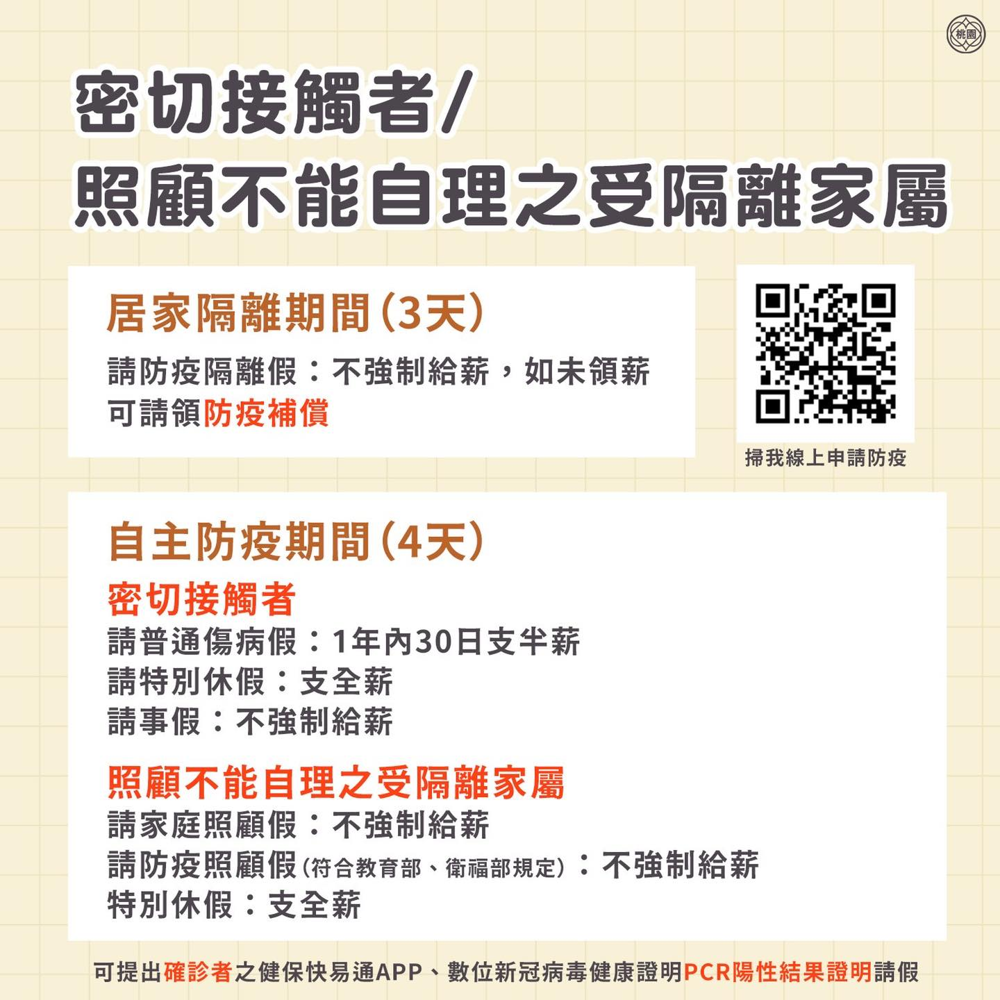
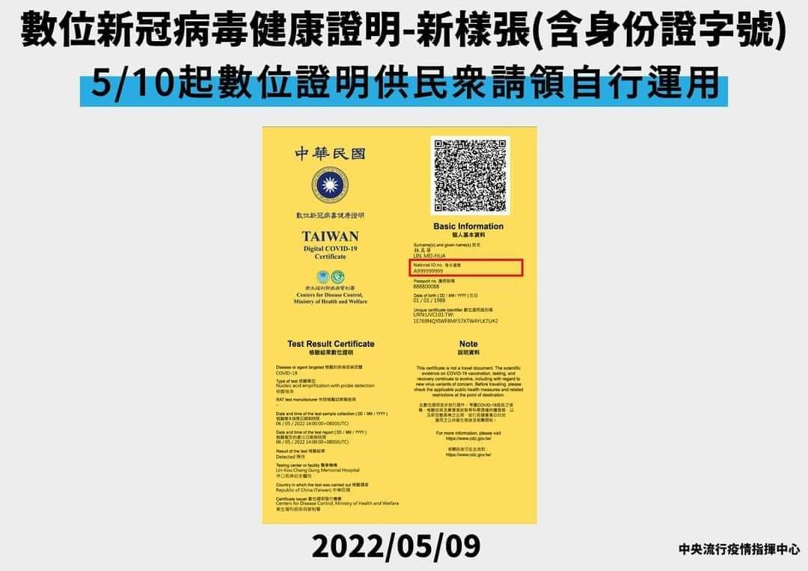
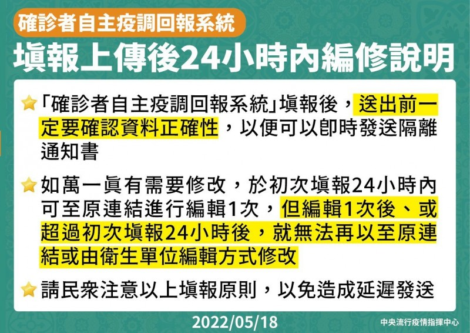

新冠肺炎 Covid-19 資訊整合平台
每日疫情快訊
疫苗注射
A7 重劃區 疫苗注射
社區疫苗注射站： A7無尾熊診所- 網路預約 - 莫德那疫苗需求踴躍. 每次領到疫苗都會優先發e-mail通知有留資料的預約民眾。
- 地址; 桃園市龜山區文學路259號
- 電話: (03) 327-8068
桃園市 疫苗注射
- COVID-19防治一網通 疫苗接種院所 地圖
- 桃園市政府 合約院所查詢
- 龜山區衛生所 社區疫苗接種站5月場次時間
PCR檢驗 及 快篩試劑
公費PCR 採檢 合約診所
COVID-19 全國指定社區採檢院所桃園 A7重劃區; A7無尾熊診所
- 網路預約 - 莫德那疫苗需求踴躍. 每次領到疫苗都會優先發e-mail通知有留資料的預約民眾。
- 地址; 桃園市龜山區文學路259號
- 電話: (03) 327-8068
桃園 臨時採檢站
長幼三合一綠色通道- 華亞科技園區 檢測站 地點: 龜山區 科技三路88號 對面停車場
- 時間: 每週一至週五的上午9時至中午12時
- 採檢時間：採檢詢問專線03-3363270, 或參考下面貼圖
- 採檢費用：免費。
- 須帶物品：健保卡和身份證。
- 採檢方式：桃園統一使用RT-PCR、核酸檢測方式，需要 1~2 天。
- 採檢結果：手機下載健保快易通APP 即可隨時查詢

家用快篩試劑
主要家用快篩試劑 包含核酸檢測, 抗原檢測及抗體檢測。 迅速找出疑似陽性個案阻斷感染源的快速初步篩檢是以抗原檢測為主。 抗原檢測的方式包含鼻腔快篩及唾液快篩兩種方式。國內核准的家用快篩試劑
- PCR核酸檢驗：盧西拉、萊析樂
- 鼻腔抗原檢驗：羅氏、英斯特、庫克比、快得利、欣大因特、亞培、杏昌醫藥、伏麻西斯、百快、禾美司、銳偵、安心篩、賽特瑞恩、白可立、福樂、基因巴帝、捷保定、BD、富樂家、護瑪思、英諾千、集克、福爾威創、飛確 RV2、台塑生醫、凌越、速可安、長興、普生
- 唾液抗原檢驗：福吉美
- 家用快篩試劑可由醫療器材販賣業者、藥粧店（屈臣氏、康是美）、醫療器材行、便利商店（7-11、全家、OK、萊爾富）、藥局、超市賣場（家樂福、全聯、寶雅、愛買、美聯社）。
- 福吉美（唾液快篩試劑）販售店家：7-11、萊爾富、屈臣氏、康是美、杏一藥局、佑全藥局、丁丁藥局、大樹藥局、維康醫療用品等。
- 便利店 7-11 查詢: 快篩試劑、醫療型口罩、防疫用品、保健品各店家販賣情形, 點擊 防疫補給站
- 全家便利店 查詢: 開啟「FamilＭart APP」點選「地圖趣」，選擇「防疫新生活」專區即可快速檢閱各分店剩餘庫存。（每30分鐘更新1次）
- LINE SPOT 熱點 查詢, 搜尋欄輸入關鍵字「#公費快篩試劑發放地點」、「#COVID-19自費採檢指定院所」、「#居家快篩試劑販售地點」
快篩實名制
依據 天下雜誌, 家用快篩試劑實名制第一梯次於2022/4/28日上路，民眾可持健保卡購買。 第二梯次預計在2022/06月份 視情況啟動。- 販售模式：依循口罩實名制1.0於藥局通路販售模式。
- 販售地點：全國4,909家健保特約藥局+58個偏鄉衛生所。
- 購買份數：每輪每身分證字號僅能購買1次（可代購）。
- 販售價格：1人1份5劑，共500元（每劑100元，醫材原則售出，概不退換）。
-
分流機制：比照口罩實名制1.0初期，以身分證字號尾數單雙號進行分流：
- 單號：星期一、三、五
- 雙號：星期二、四、六
- 週日開放全民皆可購買
- 販售份數：至少5,000萬劑，1,000萬份。（每天預計提供200萬劑）
- 廠牌：羅氏（實名制快篩有「政府專用」標示）使用流程
- 快篩剩餘數量查詢／地圖： COVID-19實名制快篩試劑地圖 、 家用快篩熱度圖 、 台灣COVID-19快篩試劑地圖 。

防疫門診 - A7重劃區版
桃園急救責任醫院
門診開設時段- 林口長庚醫院: 週一 ～ 週六 08:30 - 12:00, 13:30 - 16:30
- 桃園醫院: 週一 ～ 週五 08:00 - 12:00, 13:00 - 17:00, 18:00 - 23:00, 週六,日 08:00 - 12:00, 13:00 - 16:00
確診/快篩陽性視訊門診診
林口長庚醫院自2022年5月14日起，開立「COVID-19確診及家用快篩陽性視訊門診」-
適用對象:
- 於「居家隔離」、「自主防疫」、「居家檢疫」期間使用家用快篩陽性者之視訊確診評估。
- 「確診」者欲開立COVID-19相關藥物者，可由本人視訊看診，或可委由親友攜帶健保卡及確診證明直接至門診代為看診。
-
服務時段:
- 週一至週五之上下午時段。
- 兒科除上述時段外，亦增開週六上下午及週二、週三、週五之夜診時段。
- 本專診若經醫師評估可開立藥物，均可由親友代為領藥； 服務時段：週一至週五08:30-20:30，週六及國定假日8:00-16:00，例假日暫停。
- 網路掛號: 成人, 18歲以下兒童
- 長庚醫院 視訊門診操作說明, 安裝視訊會議插件 Cisco Webex Meeting
桃園長幼三合一綠色通道
2022/05/23日起將新增龜山華亞科技園區採檢站，提供6歲以下兒童及65歲以上長者採檢、醫生看診、拿藥的三合一服務。- 時間: 每週一至週五的上午9時至中午12時
- 地點: 龜山區 科技三路88號 對面停車場
學齡前兒童就醫綠色通道
林口長庚醫院：2022/05/17日起 開立「學齡前兒童就醫綠色通道」採門、急診雙通道，由兒科專科醫師看診，優先提供學齡前兒童相關評估, 採檢與診療服務。- 適用對象：學齡前兒童(6歲以下)。
-
門診
- 星期一到六上下午之兒童感染科或胸腔科門診。 優先看診評估，如果確認需篩檢，安排至兒童急診户外篩檢站篩檢。
- 門診網路掛號
- 快篩陽性學齡前兒童請至急診綠色通道；確診學齡前兒童請採視訊或由家人代看診。
- 兒科急診：24小時，提供快篩陽性學齡前兒童，及無門診時段之服務。

防疫隔離的各項作業整理
輕症或無症狀確診者，若未滿69歲，非65-69歲獨居者，無血液透析、懷孕、洗腎等情形，且環境條件能滿足確診者1室、同戶未確診者小於4人，可採
居家照護 ，期滿後繼續進行自主健康管理。

- 管理期間：7天居家照護＋7天自主健康管理
- 解隔條件：符合「無症狀或症狀緩解」且「距發病日或採檢日滿7天」，不需快篩即可外出
- 篩檢次數：1次，僅PCR檢測確診時（第0天）
若為確診者同住家人，且以打滿三劑疫苗，得免居隔+7天 自主防疫，兩天內快篩陰性可上班、出門採買，須避免至人潮擁擠處及聚餐。
未打滿三劑疫苗，須3天居家隔離 加4天自主防疫 ，隔離期間應留在家中，禁止外出；自主防疫期間，如需外出工作及採買生活必需品，需有2日內家用抗原快篩陰性證明。
國、高中生維持7天待在家。
未打滿三劑疫苗，須3天居家隔離 加4天自主防疫 ，隔離期間應留在家中，禁止外出；自主防疫期間，如需外出工作及採買生活必需品，需有2日內家用抗原快篩陰性證明。
國、高中生維持7天待在家。
- 管理期間：打滿三劑：0+7、未打滿三劑：3+4
- 解隔條件：期滿即解隔
- 篩檢次數：最多1+4次。匡列時快篩，自主防疫期間如要外出，當日需快篩陰性
自國外入境者，從入境隔日起算（入境日為第0天），需居家檢疫
7天，第8天起接續自主健康管理
7天，住所以1人1戶為原則，若環境條件無法配合者須入住防疫旅宿。
- 管理期間：7天居家檢疫＋7天自主健康管理
- 解隔條件：居家檢疫期滿當日（第7天）快篩陰性
- 篩檢次數：2次，入境時進行PCR檢測，居家檢疫期滿進行快篩
進行自我健康監測
，期間避免外出用餐、聚會，或出入人潮擁擠、近距離群聚等場所，待密切接觸者篩檢結果出爐，如果陽性則成密切接觸者進行居家隔離，陰性即可解除監測。
請假 / 補償 / 保險
確診者/密切接觸者 隔離請假規定及證明
- 確診者在7天隔離期間，可請普通傷病假並領半薪。
- 密切接觸者及照顧無法自理之受隔離家屬者，在3天居家隔離期間可請防疫隔離假，後續4天自主防疫期間，可評估個人或家屬健康狀況再行請假。
- 經勞動部公告請假可利用 #健保快易通APP 或 #數位新冠病毒健康證明 之PCR陽性採檢結果作為證明，如雇主仍要求須提供隔離通知書作為證明者，可於最後請假日隔天起算30日內，補提隔離通知書。
- 而5/20（五）前尚未收到隔離通知書的市民朋友也不用擔心，在6/19（日）前都可進行補提，中央流行指揮中心也將在5/25（三）「數位新冠病毒健康證明」平台增加「接觸者隔離證明」功能，提供證明書下載！



如何獲得確診者居隔通知書
- 收到簡訊填報「 COVID-19 確診個案自主回報系統 」，主動回報同住親友密切接觸者資料。
- 若確診未收到簡訊者，可由 健保快易通 導向「COVID-19 確診個案自主回報系統」，主動 回報相關資料。
- 「COVID-19 確診個案自主回報系統」可掃下方或點擊 QR_Code 填寫。

- 備註: 此份表單提交後，若有錯誤需修改，您可再點選報網址修改，僅有 1 次修改機會，且必須於填報 24 小時內執行修改，若超過填報 24 小時時限，系統將自動關閉權限無法再修改，請您於送出資料前謹慎確認手機等資料正確性。

數位新冠病毒健康證明
- 中央流行疫情指揮中心今(9)日表示，為因應民眾反應，我國「數位新冠病毒健康證明」系統將增加顯示身分證字號資料之需求，並於今(2022)年5月10日上午8時完成版本更新。
- 有關數位新冠病毒健康證明申請，係以電腦或手機直接 上網辦理，執行三個步驟即可取得：
- 確認身分。
- 選擇項目：選擇「疫苗接種數位證明」、「檢驗結果數位證明」。
- 取得證明：於申請成功畫面點選「下載/列印 數位證明」，若需列印者也可使用「取得超商列印碼」。

自我防疫
相關資訊
- 康健雜誌 2022/05/20 防止病毒入侵！ - 9大好食物 增強你的免疫力、補足關鍵營養素
確診者作業流程
快篩陽性怎麼辦？ 依據 新新聞 2022/05/21資訊： 是否符合 “快篩陽性 = 確診” 資格？A. “快篩陽性 = 確診” 的四大族群:
步驟1. 確認是以下四大族群 直接屬於確診- 歸國入境者：正在「居家檢疫」7天期間之快篩陽性者。
- 密切接觸者：因密切接觸確診者而正在「居家隔離」3天期間之快篩陽性者。
- 密切接觸者：因密切接觸確診者而正在「自主防疫」7天期間之快篩陽性者。
- 65歲以上長者：凡是65歲（含）以上之快篩陽性者，不論是否處於居家檢疫、居家隔離或自主防疫期間。
可以遠距／視訊診療醫師協助評估確認快篩陽性結果，如快篩陽性者及醫師對評估陽性結果達成共識，則由此醫師所屬醫事機構進行通報，並由系統自動研判為確診個案。快篩陽性者或評估醫師，如對於快篩陽性結果未有共識或有疑義，仍可通知衛生局安排PCR採檢。
請參考 防疫門診 的說明進行視訊門診，或利用桃園長幼三合一綠色通道 進行採檢、醫生看診、拿藥的三合一服務。

步驟3. 居家照護 7+7
前7天為「居家照護的居家隔離」、後7天為「居家照護的自主健康管理」。
B. 不是以上的四大族群:
步驟1. 做PCR 確認是否確診需做PCR才能確認是否確診, 需戴好口罩，勿搭乘大眾運輸工具，儘速至鄰近的社區採檢院所進一步檢測。 記得將使用過之快篩採檢器材用塑膠袋密封包好，一併攜帶至社區採檢院所，交給院所人員。在採檢時醫療院所會確認欲PCR民眾之手機號碼，提醒民眾主動更新手機號碼，以免檢驗陽性後收不到簡訊通知。
請參考 防疫門診 的說明, 可利用桃園長幼三合一綠色通道 進行採檢、醫生看診、拿藥的三合一服務。
步驟2. 等待衛生局通知
請先自行隔離，獨一人一室，盡量和家人使用不同衛浴設備，等候公衛人員通知。
步驟3. 聯繫接觸者
請主動通知發病前兩天的密切接觸者，主動填寫疫調單。
步驟4. 回報疫調
若收到政府疫調網址則直接透過連結填寫。尚未收到者可上健保快易通，APP裡點選「健康存摺」-「COVID-19確診個案自主回報系統」填寫。若有修改需求，請於初次填報24小時內進原連結編輯一次。

步驟5. 居家照護 7+7
前7天為「居家照護的居家隔離」、後7天為「居家照護的自主健康管理」。